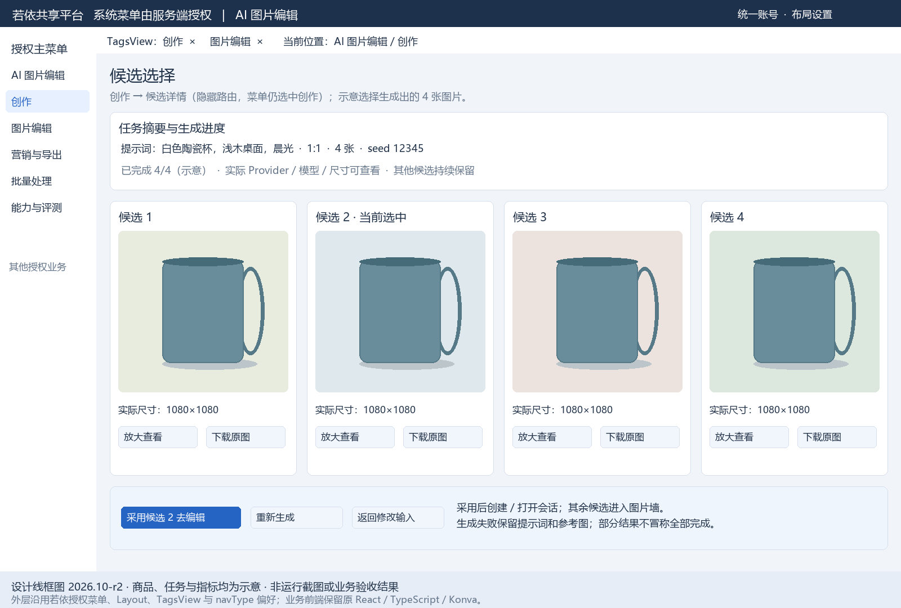
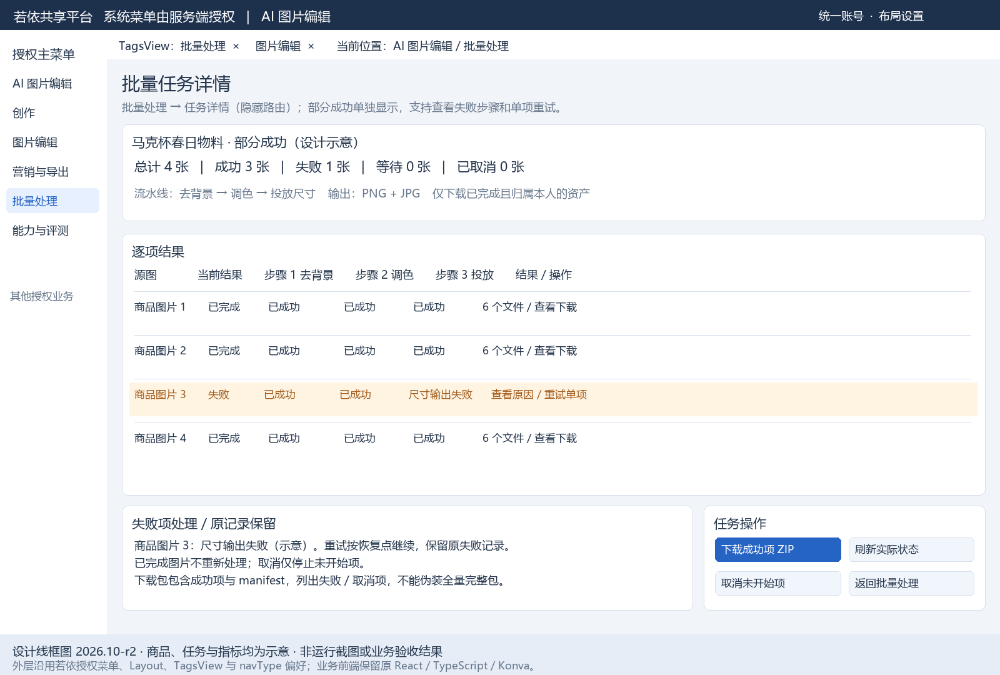
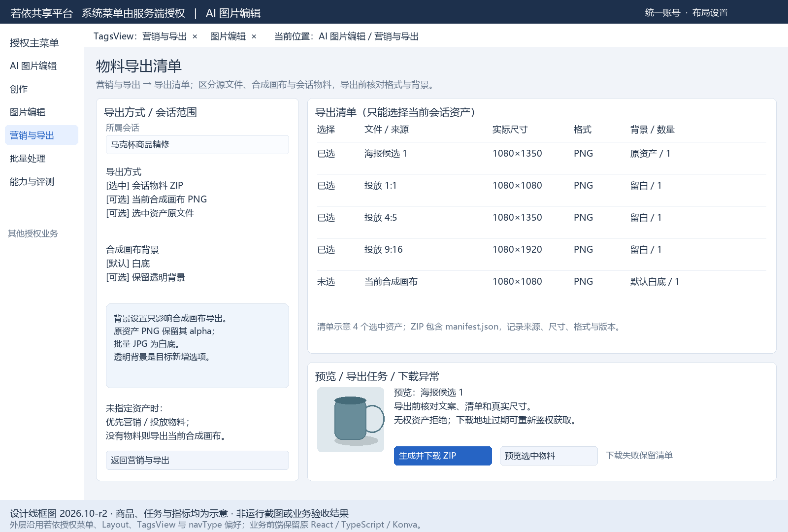
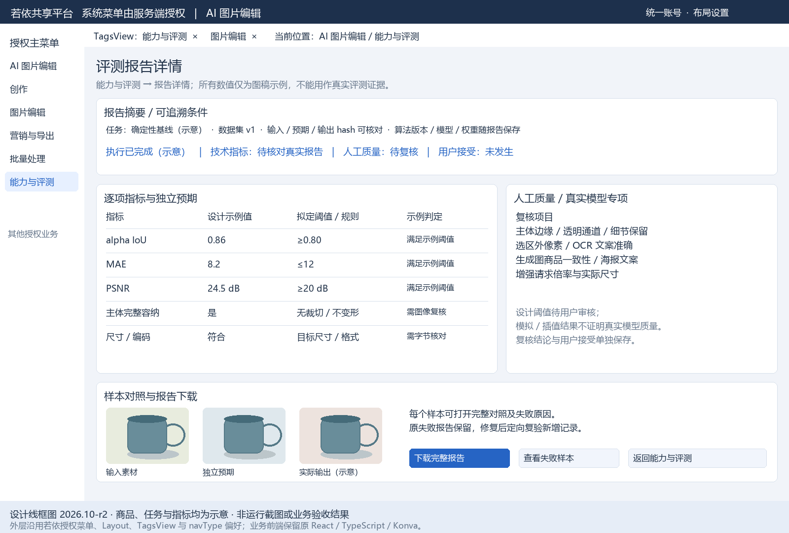
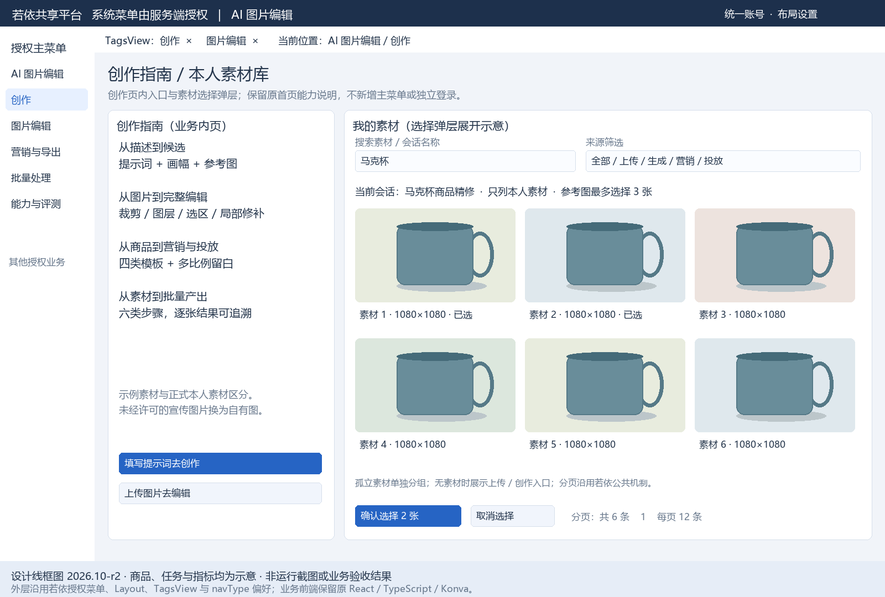
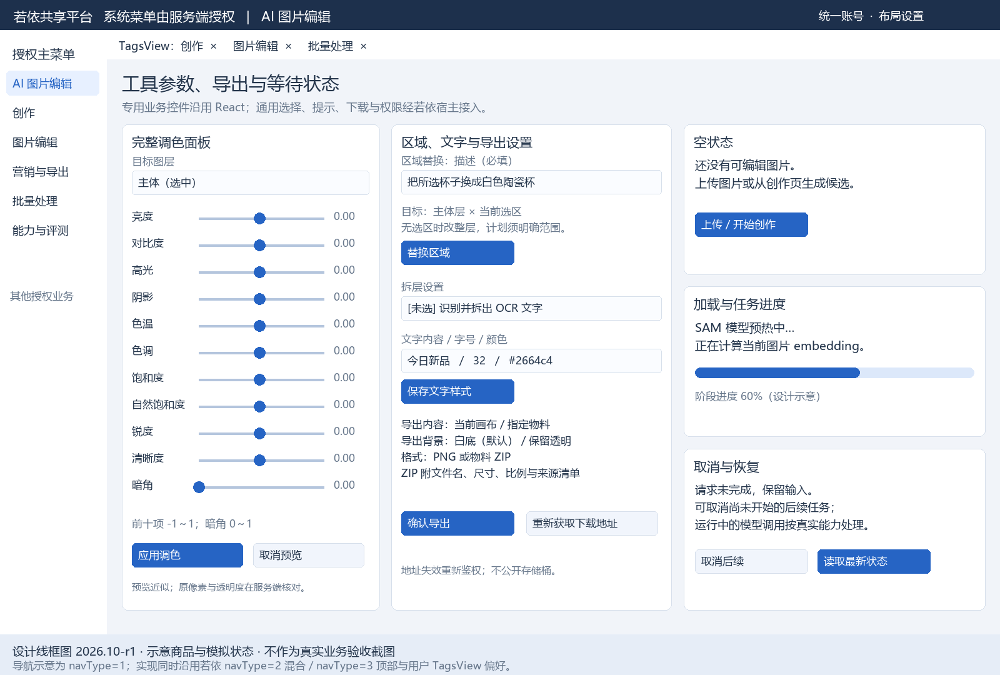
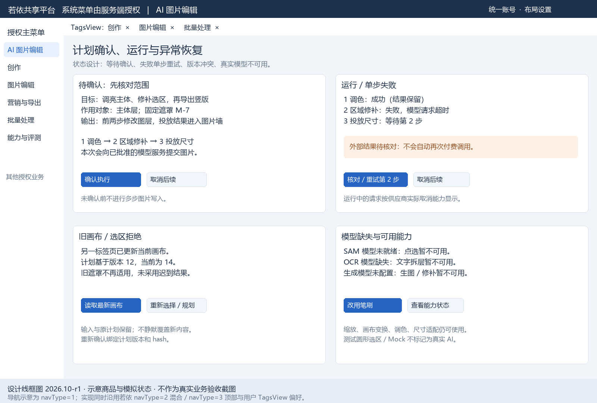
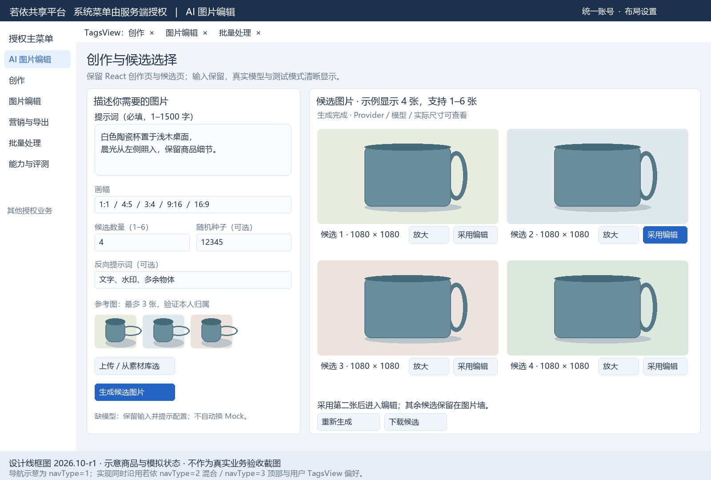
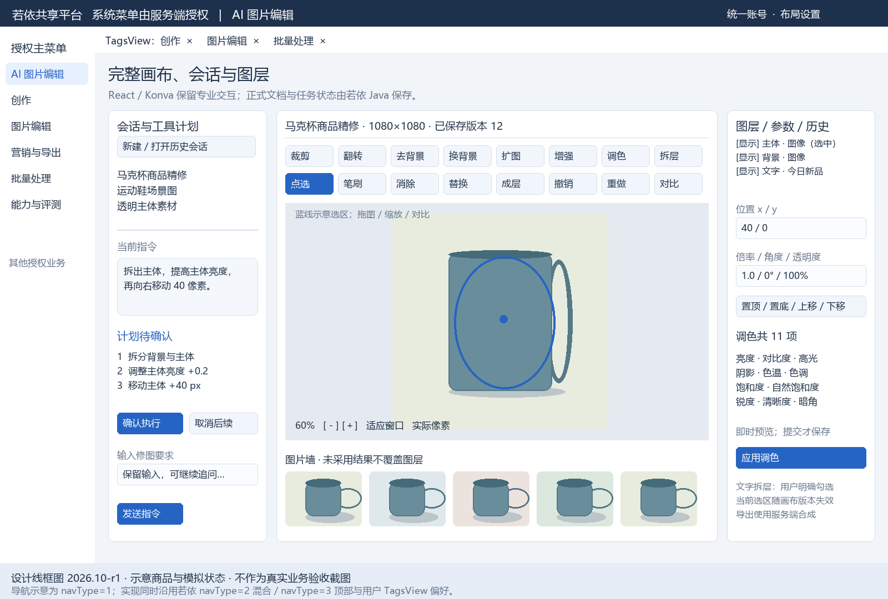
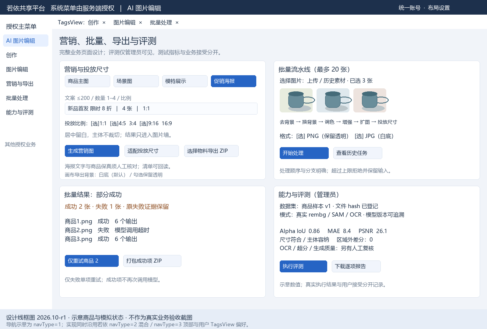

本版逐一展示全部 5 个授权菜单，每个菜单均有独立完整界面图；另有 5 张详情与选择界面。保留 React / TypeScript / Konva，若依提供外层登录、授权导航与共享设施。首版合并图保留为补充，不再代表菜单覆盖完成。这里是设计交付，未实现或业务验收。
| 授权菜单 | 完整页面图 | 本图内容 |
|---|---|---|
| 创作 | 独立完整页面 | 提示词、五种画幅、数量、seed、参考图、生成任务、上传与指南。 |
| 图片编辑 | 独立完整页面 | 会话、计划、工具栏、完整画布、图层参数、历史与图片墙。 |
| 营销与导出 | 独立完整页面 | 四种营销模板、文案、生成物料、投放比例、采用与导出入口。 |
| 批量处理 | 独立完整页面 | 1–20 张源图、六种处理步骤、顺序、参数、PNG/JPG 与提交。 |
| 能力与评测 | 独立完整页面 | 管理员能力状态、模型/权重版本、测试标记、评测创建与列表。 |
全部菜单独立页面
业务详情与选择弹层
候选选择
创作的隐藏详情；候选放大、下载、采用、重试和返回修改。

点击图片查看原尺寸。设计图中的商品、状态与指标均为示意。
批量任务详情
批量的隐藏详情；部分成功、逐项结果、失败原因、重试与成功项 ZIP。

点击图片查看原尺寸。设计图中的商品、状态与指标均为示意。
物料导出清单
营销页的导出内页；来源、尺寸、格式、背景、清单与下载恢复。

点击图片查看原尺寸。设计图中的商品、状态与指标均为示意。
评测报告详情
管理员报告详情；指标、独立预期、人工复核与样本对照。

点击图片查看原尺寸。设计图中的商品、状态与指标均为示意。
创作指南与素材库
创作业务内页与选择弹层；本人资产、分组、分页、最多三张参考图。

点击图片查看原尺寸。设计图中的商品、状态与指标均为示意。
参数、异常与首版补充图
完整工具参数
11 项调色、区域/文字参数和空/加载/取消状态。

点击图片查看原尺寸。设计图中的商品、状态与指标均为示意。
计划与异常
待确认、运行、失败重试、取消后续、冲突及能力不可用。

点击图片查看原尺寸。设计图中的商品、状态与指标均为示意。
首版创作候选总览
保留首版图供追溯；创作与候选以本版独立页面为准。

点击图片查看原尺寸。设计图中的商品、状态与指标均为示意。
首版编辑工作台
保留首版；本版独立菜单图更新菜单选中状态。

点击图片查看原尺寸。设计图中的商品、状态与指标均为示意。
首版营销批量评测总览
保留首版图供追溯；该总览不代替独立菜单页面。

点击图片查看原尺寸。设计图中的商品、状态与指标均为示意。